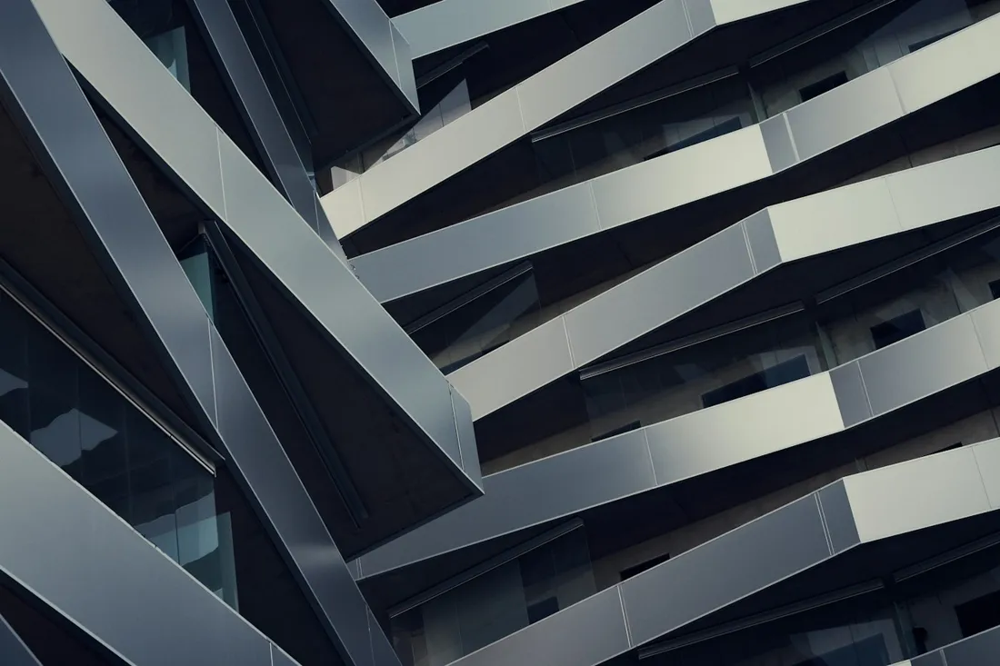
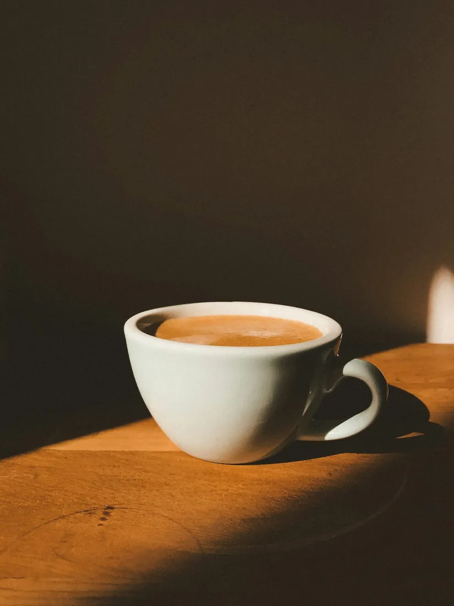
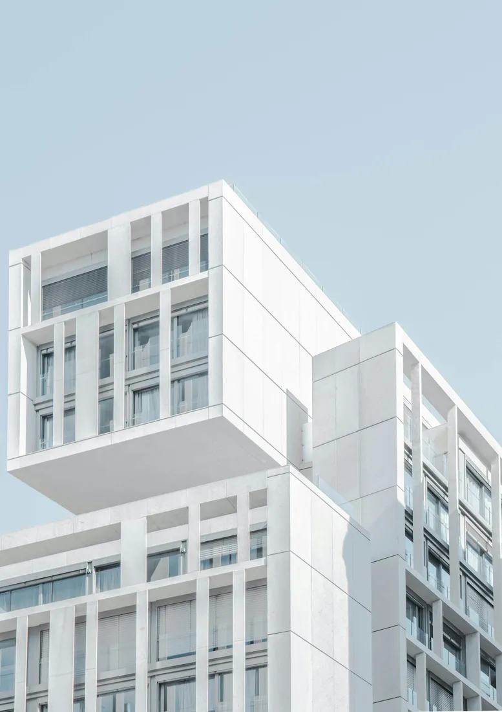
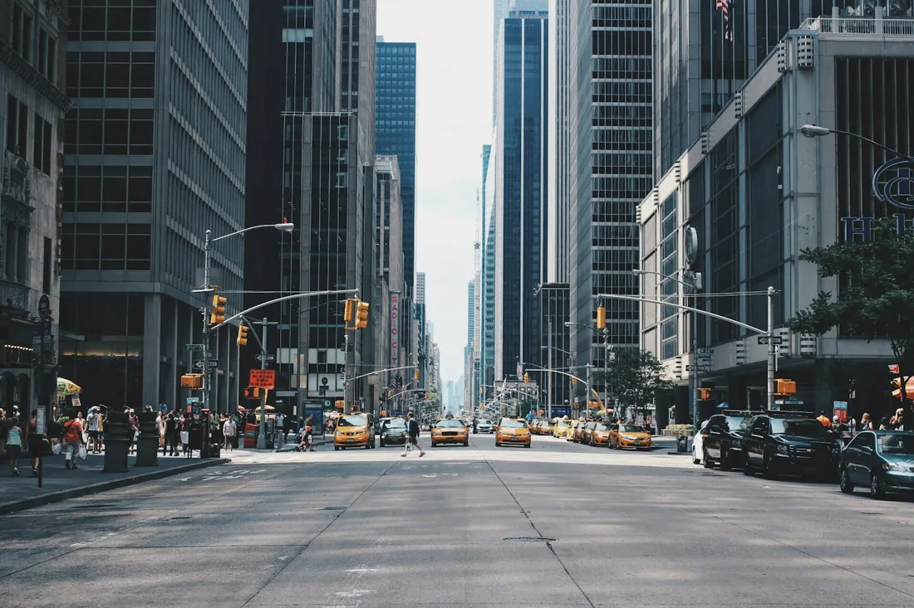

ArchitectureLines of the new cityHow glass and concrete learned to bend8 min read
Latest stories

CoffeeThe morning cup ritualWhy the first coffee tastes better4 min read NatureA lake that holds the mountainsThree days without a signal7 min read
NatureA lake that holds the mountainsThree days without a signal7 min read
ArchitectureWhite houses on the hillMinimalism that is warm5 min read
TravelA city that never stopsTwelve hours on foot9 min read CoffeeCoffee and shadowsA photo essay from a small cafe3 min read
CoffeeCoffee and shadowsA photo essay from a small cafe3 min read NatureEmerald waterWhere the glacier ends6 min read
NatureEmerald waterWhere the glacier ends6 min read ArchitectureSpiral of steelInside a tower that turns5 min read
ArchitectureSpiral of steelInside a tower that turns5 min read